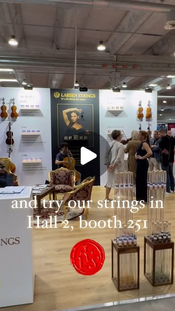
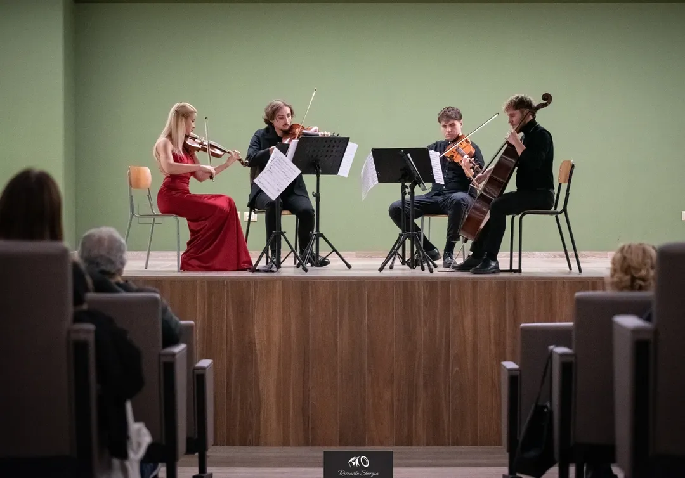
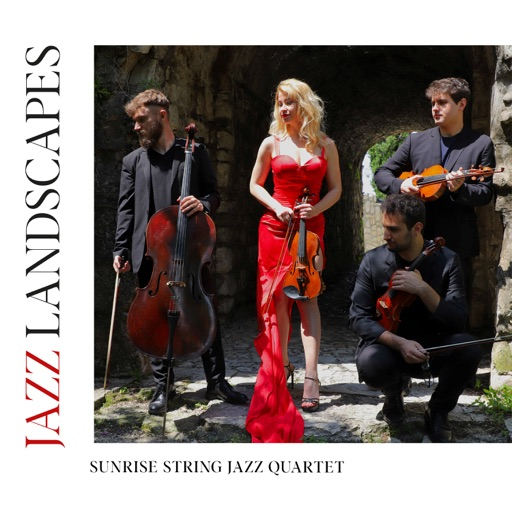
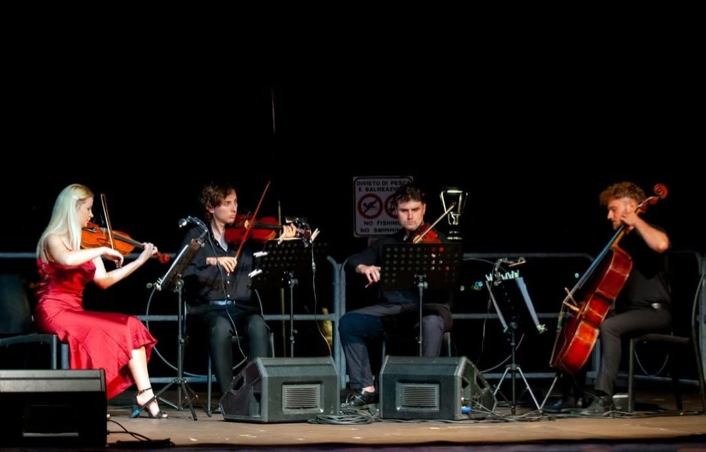

I. Il Silenzio delle Città
La frattura dell'umanità — il caos del presente.


Foto: Riccardo Borgia
Fondato il 26 gennaio 2023 da Anna Glibchuk, il Sunrise String Jazz Quartet riunisce quattro musicisti formati al Conservatorio G. Verdi di Milano in un ensemble d'archi dedicato a un repertorio Border Line tra musica colta, jazz, pop e colonne sonore, con l'affiatamento maturato in concerti, registrazioni e progetti con Pino Jodice.
Composizioni e arrangiamenti: Pino Jodice
Scarica press kitViolinista, nata nel 1992 in Ucraina, si è diplomata al Conservatorio «G. Verdi» di Milano sotto la guida del M° Silvio Moscatelli. È spalla della Verdi Jazz Orchestra Ritmico Sinfonica e dell'Opera Symphony Orchestra; ha suonato con MozzOrchestra, Orchestra Filarmonica Europea, Orchestra Sinfonica di Sanremo, MYO Mondaino, OSCOM e altre formazioni.
Ha collaborato con Dave Weckl, Antonio Faraò, Fabrizio Bosso, Simona Bencini, Nico Gori, David Blamires, Simona Molinari, Sighanda, Stevie Biondi e Pino Jodice. Fondatrice del Sunrise String Jazz Quartet, ha pubblicato il CD Jazz Landscapes nel 2025.
Laureato col massimo dei voti al Triennio del Conservatorio «G. Verdi» di Milano, ha partecipato a diverse iniziative proposte dalla Regione Lombardia. Si è esibito con artisti di calibro internazionale come David Blamires, Nico Gori, Simona Bencini, Flavio Boltro e altri.
Dal 2025 è violinista del Sunrise String Jazz Quartet, con cui promuove Jazz Landscapes e l'attività concertistica del gruppo.
Violista in orchestre come ICM Milano (2012–2014), FuturOrchestra (2014–2016), Conservatorio G. Verdi (dal 2016), GD Major (2018), Monferrato Classic (2021), Abbazia Jazz Festival — Prima Viola (2023, con David Weckl e Antonio Faraò), Verdi Jazz Orchestra — Prima Viola (dal 2020) e Mondaino Youth — Prima Viola (2023, con Stevie Biondi).
Tra le collaborazioni in quartetto: Davide Cabiddu's Quartet (album Nutopia, 2022–2023) e Sunrise String Jazz Quartet, attivo con Cinzia Tedesco e Pino Jodice in concerti come Mister Puccini in Jazz (5 novembre 2024, Roma) e Jazz Landscapes (8 agosto 2025, Lerici). Ha partecipato al tour Michael — The Show (dicembre 2024) ed è violista presso l'Orchestra Filarmonica della Franciacorta (2025, tour europeo de Il Volo).
Violoncellista, si è laureato con il massimo dei voti presso il Conservatorio «G. Verdi» di Milano sotto la guida della professoressa Nicoletta Mainardi. È primo violoncello della Verdi Jazz Orchestra, conseguentemente ad audizione.
Ha partecipato a importanti produzioni con artisti internazionali quali David Blamires, Flavio Boltro, Gianluca Petrella, Simona Bencini, Nico Gori, Stevie Biondi, Cinzia Tedesco e Pino Jodice.
Fa parte del Sunrise String Jazz Quartet, con il quale ha pubblicato un disco uscito il 26 gennaio 2025 con musiche del Maestro Pino Jodice, e con cui suona in importanti occasioni come il G8 a Roma presso l'Auditorium Parco della Musica Ennio Morricone e nella Basilica di San Petronio a Bologna.
Dal 2023 al 2025 il quartetto ha portato il suo repertorio Border Line nei principali teatri e festival italiani, in collaborazione continuativa con Pino Jodice.
Oratorio in tre movimenti · musica originale di Pino Jodice
Grido di pace che fonde oratorio e jazz contemporaneo. Gli archi del quartetto attraversano i tre movimenti come filo lirico e drammatico, guidati da Anna Glibchuk.
La frattura dell'umanità — il caos del presente.
Meditazione lirica — il silenzio che parla.
Rinascita e speranza — il jazz come visione comune.

Primo album ufficiale del quartetto: otto tracce composte e arrangiate interamente da Pino Jodice. Un viaggio tra composizioni originali — Melodia Infinita, Cantico, Midea(s)Tension, Eternal Child — e riletture di Morricone, Bee Gees, Michael Jackson e un medley pop su Sting.
Ascolta su SpotifyVideo ufficiali e live dal canale YouTube: ascolta il suono del quartetto prima del concerto.
Video ufficiale tratto dall'album Jazz Landscapes. Composizione di Pino Jodice, girato al Palazzo Cigola Martinoni a Cigole (BS).
Guarda su YouTubeDue date in calendario: Brunello con ingresso libero e la presentazione di Jazz for Peace a Milano. Segui gli aggiornamenti e prenota il quartetto.

Nuove date in programmazione.
Segui gli aggiornamentiARTandCHARITY O.D.V. · ore 17:00
Le Cascine di S. Maria Annunciata · Brunello (VA)
Programma completoCon Fabrizio Bosso e ONJ
Sala Verdi · Conservatorio G. Verdi di Milano
Scopri il progettoConcerto dal vivo
Lerici (SP)
Con Cinzia Tedesco e Pino Jodice
Roma
Radio Vaticana · Piazza Pia
Città del Vaticano
Ascolta su Vatican NewsAuditorium Istituto Comprensivo «E. Fermi»
Via Saff — Alba Adriatica (TE)
Otto tracce di Pino Jodice — ascolta Jazz Landscapes ora su Spotify, Apple Music e tutte le piattaforme.
Porta in scena quattro archi d'eccellenza: festival, teatri, eventi corporate e serate private. Scrivici per disponibilità, rider e materiale stampa.